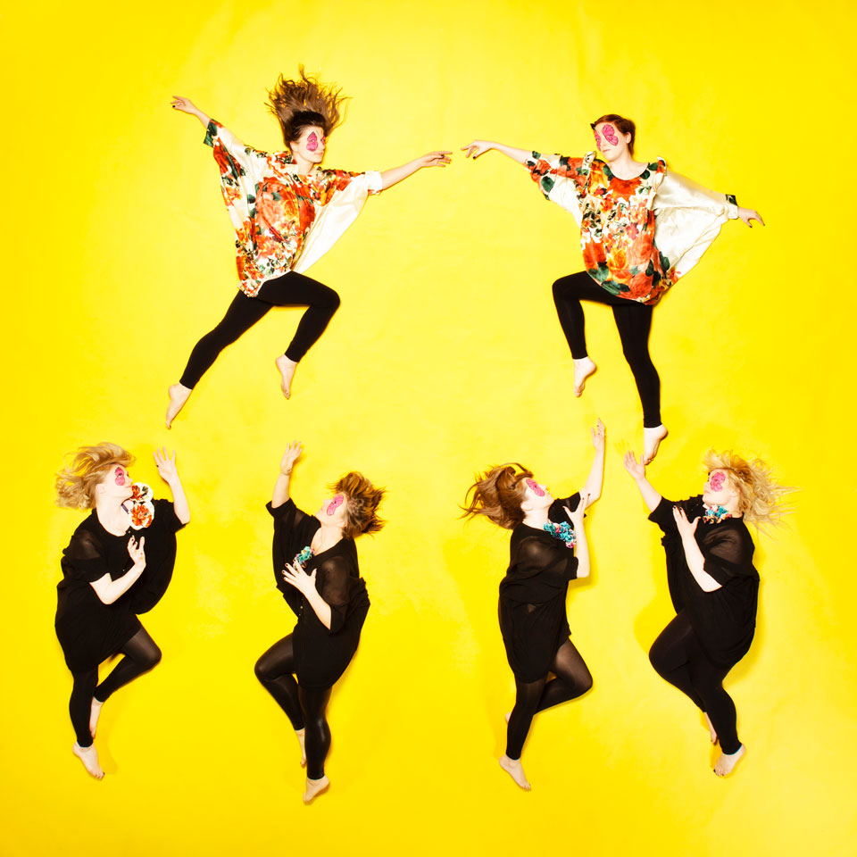

Special Episode: UN Woman
UNIFEM Iceland approached Kitty to produce a piece to celebrate the organisation joining forces with other institutions to become UN Women. After discussing the issues encompassed in this work this special episode drew its visual focus from the themes 'Women supporting women', 'Freedom' and 'Giving women a stronger voice'.
The main art piece from this Episode in addition to the usual photographic collection is a giant print which was revealed in downtown Reykjavík on International Women's Day.
- Producer, Concept and Artistic Direction: Kitty Von-Sometime
- Official Photography: Kristinn Magnússon
- Behind the Scenes Photographer: Sara Vilbergs
- Costumes: Juniform (Birta Björnsdóttir)
- Head Runner: Sara Haraldsdóttir
- Runner: Lilja Dögg
- Make up: Neníta Aguilar, Theordóra Torfadóttir, Arna Sigurlaug Ragnarsdóttir
- Behind the scenes video: Manny Santiago
- 4th February 2011
